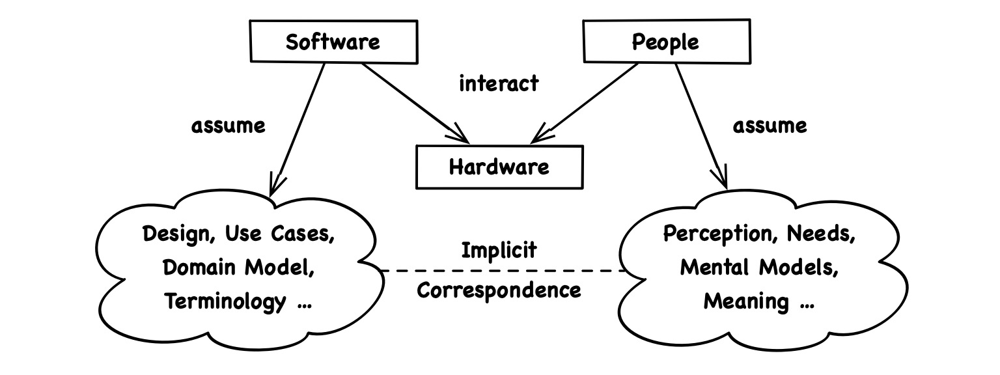

August 25, 2019 • Sebastian Fichtner

If software architecture roots in a set of laws that naturally apply to all code, then what are these laws? Let’s narrow down the first one! In this text, we excavate the fundamental role of software architecture by digging into the essence of code.
Note, that when we talk of users, designers, developers and so forth, we mean abstract view points, not job descriptions or actual people. Could be that one person plays all the roles, could be that a view point is held by an institution or certain demographic. The possible concretions don’t matter here.
To uncover the nature of code, let’s approach it from a beginner’s mind, let’s pretend we know nothing about software. What does it do? How does it fit into the whole picture?
At least, we can say this much: Software runs on concrete hardware to help people achieve abstract goals.

Putting abstractions (and wishful thinking) aside, we may also notice that software interacts with the real world exclusively through hardware. From the perspective of code, there is no “user interaction”, there are just a bunch of devices like touch screen, hard drive and WiFi which translate information between code and the tangible world. While people might feel like they directly interact with an interesting domain, they technically only ever interact with hardware.
To meet people’s needs and expectations (and wishful thinking), we build software upon many shared ideas, from language and common sense over our mental model of the application domain to the specific use cases and design of the envisioned product. Whether we make such ideas explicit in code or not, they are innate to any software that provides value.
There is no escape from this duality. Every piece of code on the planet stands with one foot in a technical- and with the other in an ideational environment.
The two environments are clearly distinct in the sense that the machine on which code runs is hardly ever what the code is about. Or put another way: We can always distinguish the value software generates for the user from the headache it generates for the developer.
The ideational environment of code are all concepts needed to describe the value we want people to get out of the product. It also reflects what ideas and conventions people generally value. So let’s call it the value environment.
More specifically, the value environment implies a complete description of the product from the user’s perspective, including a detailed idea of the product’s philosophy, application domain, use cases and design.
The tech environment of code are all pre-existing APIs the code can directly talk to. Mainly, that’s the programming language itself as well as frameworks provided by the system vendor and by 3rd parties. Note how this differs from a developer’s tech stack.
The pupose of most software frameworks is communication with hardware, and we can understand much of the tech environment as a hardware representation.
It should be clear that we can’t consider software frameworks as defining the architecture, let alone as being it. There is no such thing as an “architectural software framework”. No tool has the power to dictate the structure of what we build.
We’re interested in a thought framework not in technical frameworks. Our question is how to think about the architecture of a whole project, not how to subject it to the patterns of one external dependency.
Value- and tech environment may hold some difficult or implicit concepts that are hard to model, but they hold all the concepts our code represents. We never need to “invent” anything. Inventions wouldn’t correspond to anything in the environments, so they would neither contribute customer value nor help in dealing with the technology. They would only add useless complexity.
Code has exactly two sources of truth: its value- and its tech environment. They are its meaning. Code is meaningful when it reflects the reality of their concerns, structure and mechanics, no matter at what level of detail.
The two environments are very real - abstract maybe, but neither arbitrary nor virtual. And the “real world” can be a capricious chimera. Code is under this constant pressure to adapt because it mediates between two changing realities.
Luckily, reality doesn’t evolve through arbitrary glitches. At least, I’d like to believe mine doesn’t. Instead, it’s bound by inherent laws. Some aspects of the world change easily, while other changes require lots of energy, are unlikely or simply impossible.
This partial continuity and predictability of the world equally applies to the code representing that world. That’s why we intuitively understand how impactful a change request is. In other words: We know its meaning.
When code already corresponds well to reality, the effort that’s required to adopt a real-world change in code matches our intuitive expectation. To put it simply: With meaningful code, a “small” feature is quick to implement. That’s not to say code should map all details of the world, but whatever aspects it needs to represent it must represent truthfully.
The reverse also applies: When things change and our code can’t keep up as expected, it means some part of it is foul. Some part is at odds with the truth.
To see things as they are and then paint an accurate picture is more than some heuristic for how to write resilient code because it matches what code really does. Code expresses ideational and technical concepts. And effective code tells the truth.
This axiomatic realization is almost banal. But it pays to deepen our awareness of it because, in practice, we’re often tempted to fabricate merely convenient concepts instead of making an effort to uncover the true inherent concepts of value- and tech environment.
Writing code is to speak in a programming language. So, above all, let’s not lie. Lies make bad karma. Let’s just tell the truth and effectiveness will follow.
“In the Beginning Was the Word”
– Gospel of John
Code shall tell the truth, but how can it tell us anything at all? Let’s talk about naming.
We might think naming code artifacts is somewhat important because names help everyone understand what the hell the code does. And while that is true, the process of naming things has far greater significance.
The expressiveness of code relies entirely on names. Even its structure would be meaningless if the structural elements were anonymous. All we have to attach meaning to code is the shared language we employ in its names.
“There are only two hard things in Computer Science: cache invalidation and naming things.”
– Phil Karlton
This might be the most well known quote in all IT. So naming is not just crucial but also hard. Why?
To name a code artifact, we have to think about what it actually means. What is the role of this variable, function, enumeration, interface, class, file, module or micro service? What does it represent?
When an artifact’s intrinsic name isn’t obvious, it likely doesn’t correspond to anything real yet, at least not to only one thing. Either we haven’t precisely mapped the involved ideas and technicalities to code or we haven’t even understood them properly.
Naming is difficult because it is a bi-directional process. By figuring out how to name our code artifacts we also figure out what code artifacts we should have to begin with. We articulate but also investigate value- and tech environment, constantly answering two intricate questions:
You likely saw this coming from a mile away: Although value- and tech environment are clearly distinct ideas that we could easily spin as some sort of profound dualism, they have no parity at this grand level of analysis. Value- and tech environment are not true equals. What software does for the user is more important than what it requires from the developer.
We don’t make software because a bunch of developers are bored to death, but because a bunch of users love it. So there are levels to this: How we build a software poduct depends on what exactly we build which depends on why we build it. While the developer has the know how (the technical environment), the user has the know why (the value environment).
You might think: “But users rarely know why they value one thing over another, and they certainly don’t make every design decision, that’s why we have excellent product owners and UX designers.” All that is true. However, we’re targeting a deeper truth. Although users might not consciously know them, the reasons for why they love or hate software are ultimately their own. Also remember, that “users” refers to an abstract viewpoint.
When we design software, we aim to accommodate what users feel, believe and value. That means we anticipate a value environment. The technical environment then follows our design as in “form follows function”. Therefore, the value environment is paramount. Fear not, we’re not trying to resurrect the waterfall model here, we only depict logical dependence and importance, not sequence.
To bring this back to earth: The reason Instagram has mobile phones as a basic tech environment is not that the respective developers are tired of JavaScript. Instagram runs on mobile phones because people documenting their lifes is a pretty mobile use case.
So we can make two assessments of the nature of code:
This result took only a subtle (almost self-evident) step in terms of analysis, yet it allows for a leap in terms of practical implications. If we truly let the fact sink in that code represents real concepts, and if our thinking truly is “customer centric”, then many daily questions in the trenches of code production answer themselves, from naming and ordering over optimization and organization to high-level architecture.